知識冒險島Adventure Island
把複習變成一場一場的小關卡
主打國語成語小遊戲，每個關卡約 10 題，練習就對了！Chinese idioms, in short review challenges.
第一課：你好新朋友
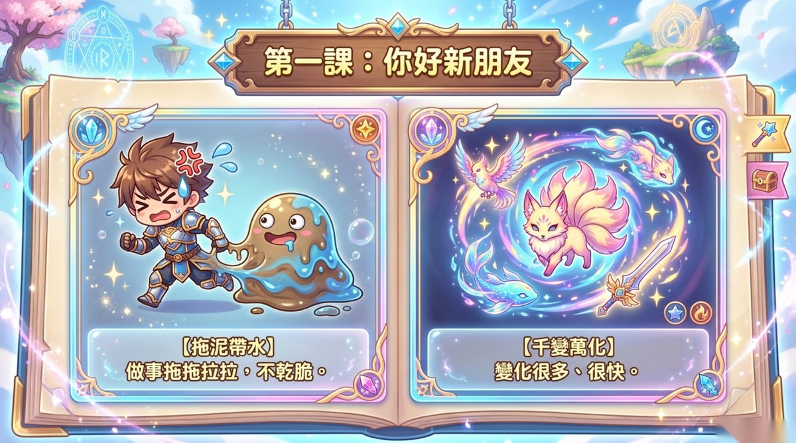
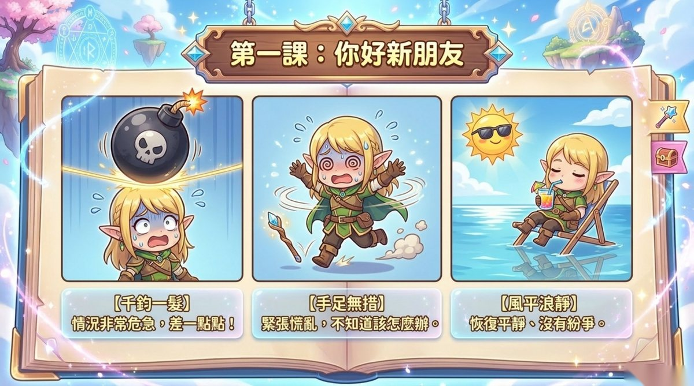
第二課：我們的約定
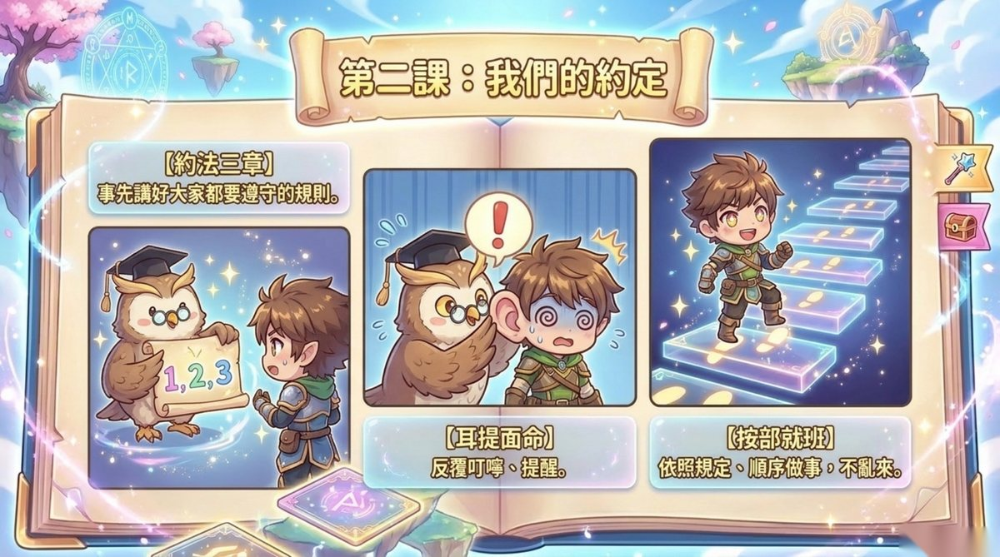
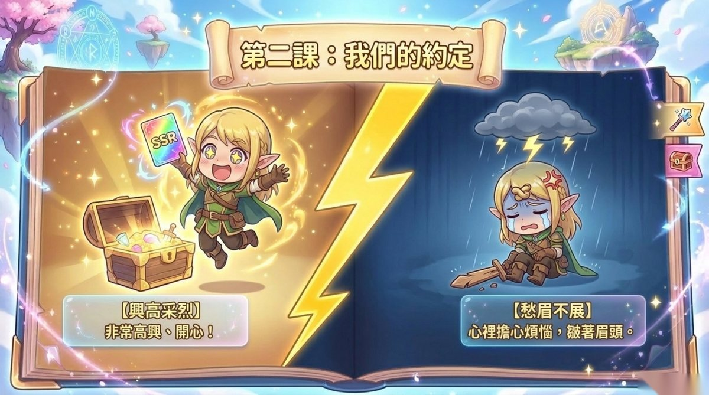
第三課：下課十分鐘
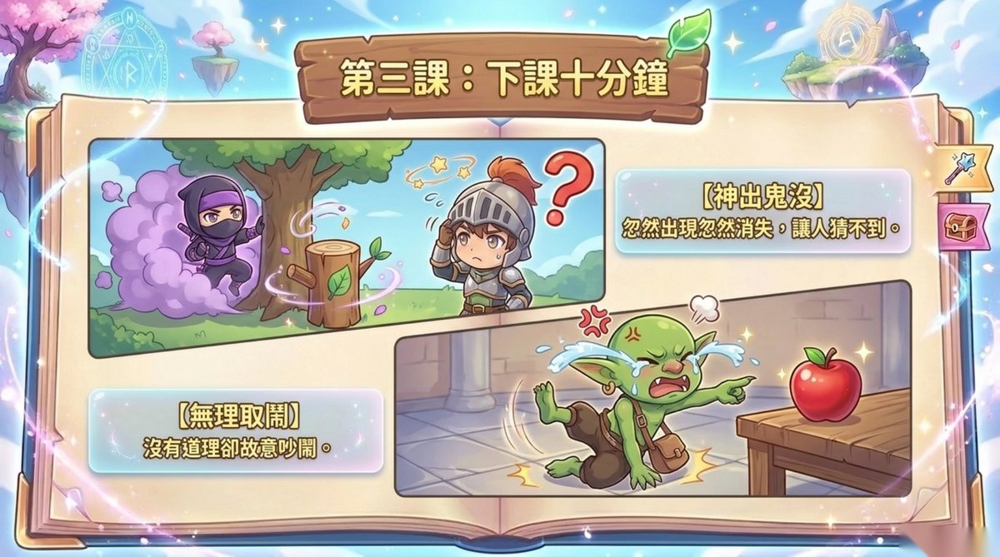
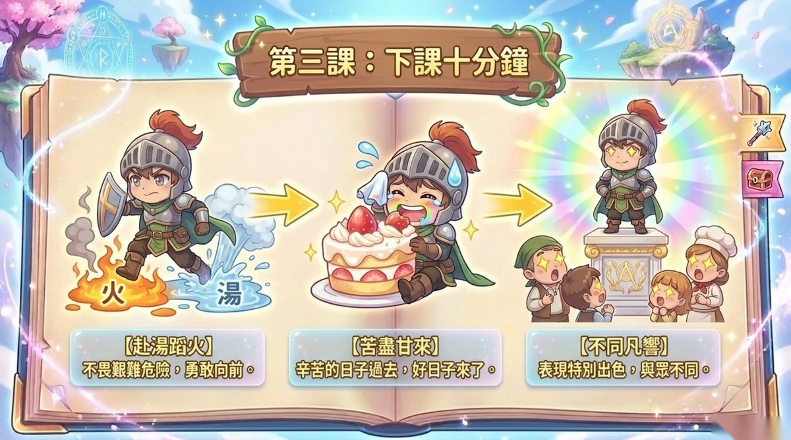
第四課：一顆黑點
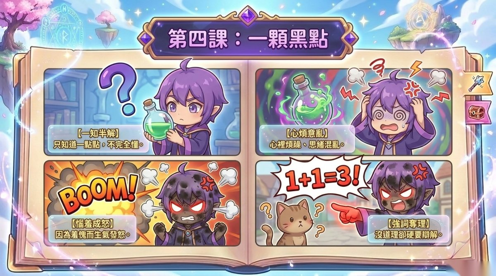
第五課：火大了
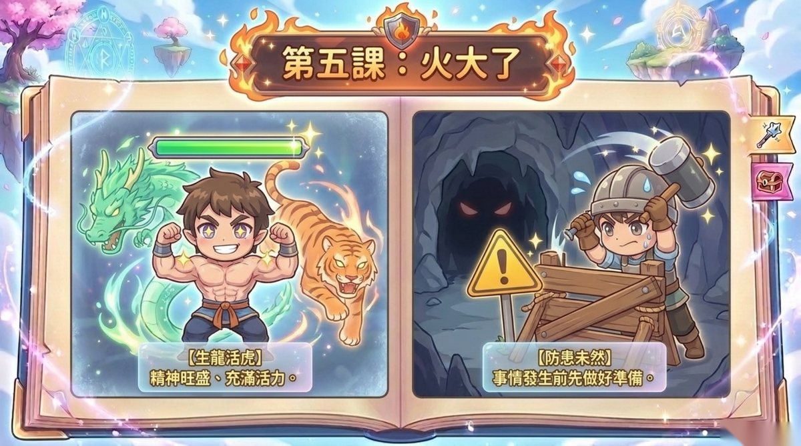
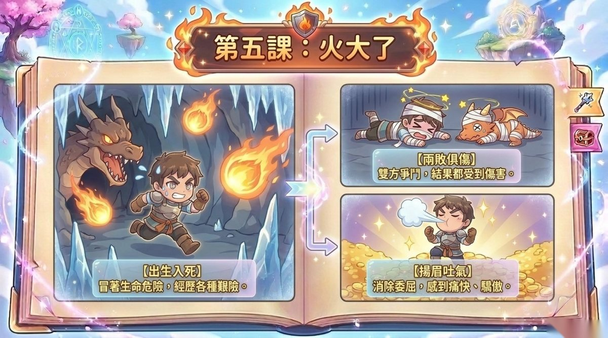
第六課：我該怎麼辦
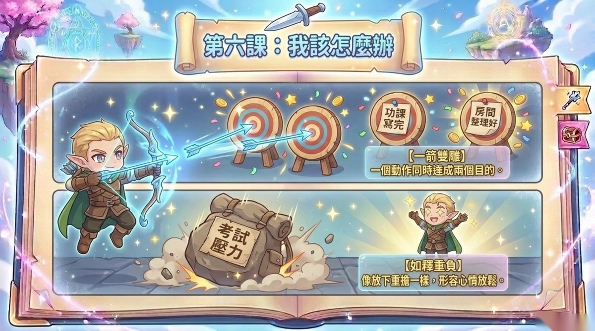
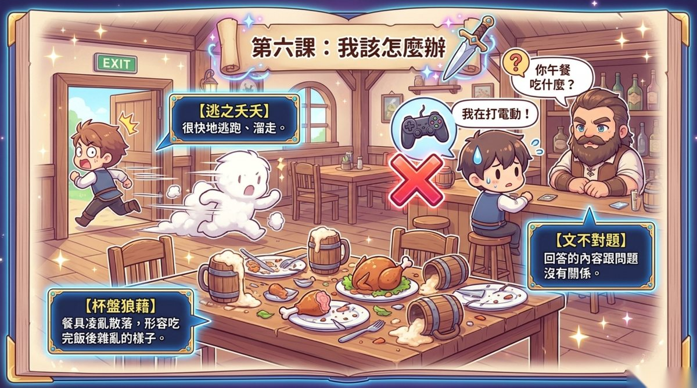
🌟 情境猜成語Guess the idiom
看看下面的小故事，猜猜是哪一句成語！
載入中……
🐉 成語接龍Idiom streak challenge
每個成語都藏著一個生字，把它接回去，看看你能連續答對幾題！
載入中……
🔍 部首大挑戰Radical challenge
這個生字的部首是哪一個？選對了就能認識它跟哪一類的字有關！
載入中……
第七課：最年輕的奶奶
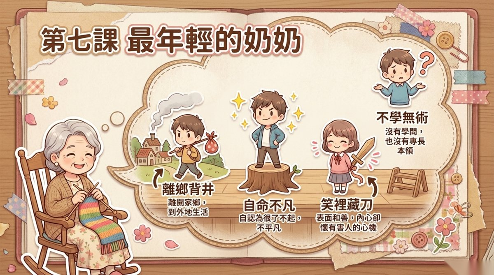
第八課：魔髮哥哥
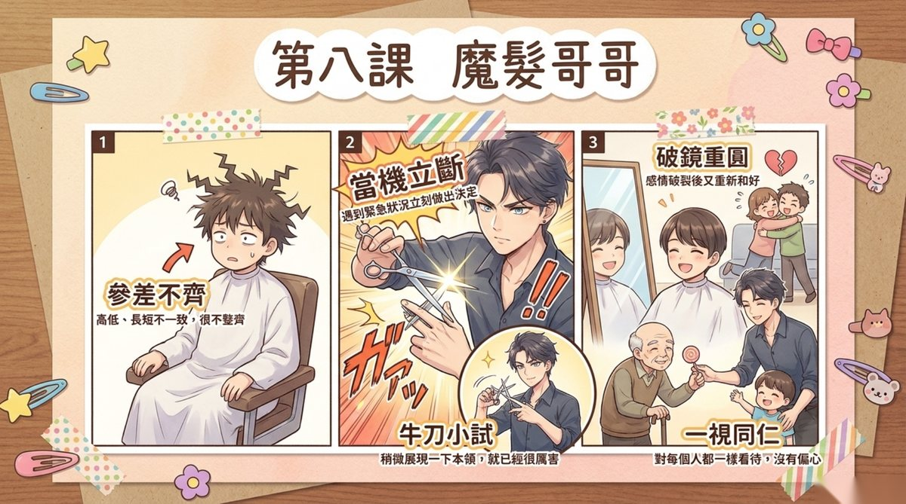
第九課：穿白袍的醫生伯伯
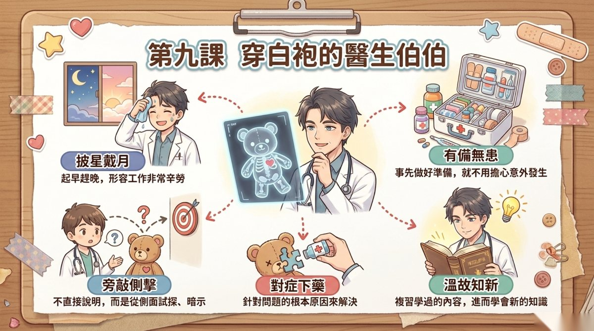
第十課：哎呀，誤會大了！
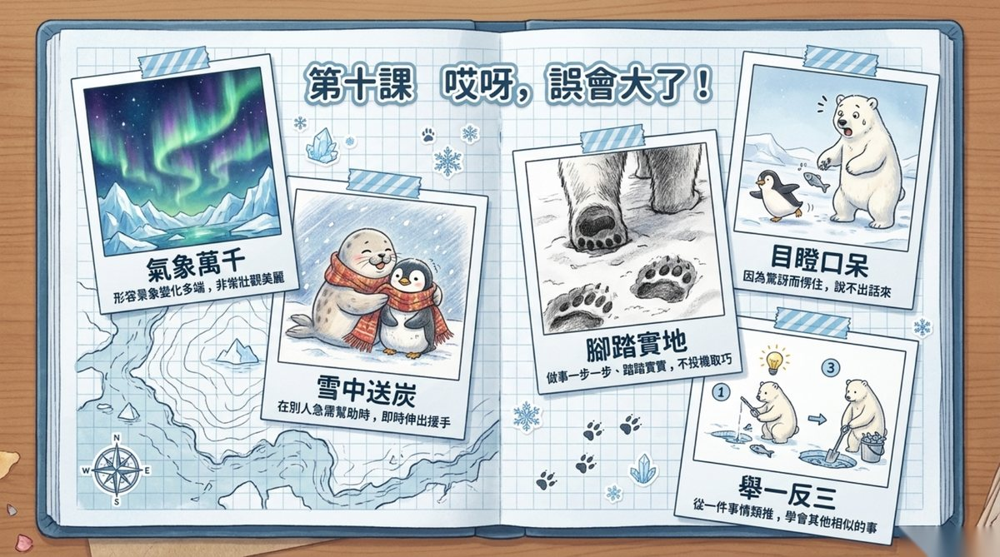
第十一課：石虎的告白
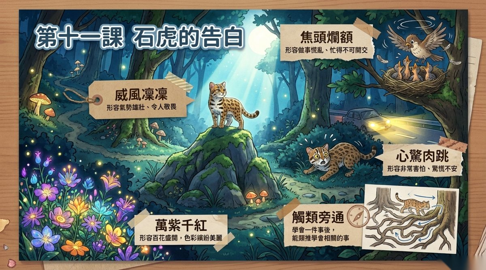
第十二課：昆蟲的保命妙招
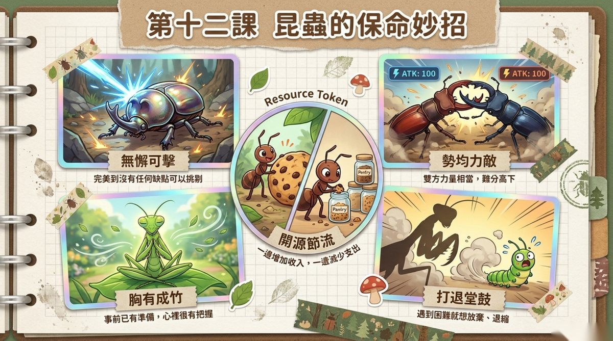
🌟 情境猜成語Guess the idiom
看看下面的小故事，猜猜是哪一句成語！
載入中……
🐉 成語接龍Idiom streak challenge
每個成語都藏著一個生字，把它接回去，看看你能連續答對幾題！
載入中……
🔍 部首大挑戰Radical challenge
這個生字的部首是哪一個？選對了就能認識它跟哪一類的字有關！
載入中……